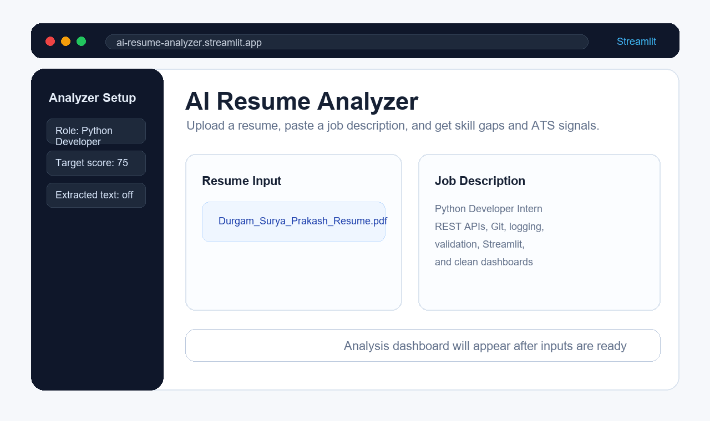

Live dashboard
AI Resume Analyzer
Python, Streamlit, Scikit-learn, Plotly, PyPDF2, python-docx

- Parses PDF and DOCX resumes and compares them against a job description.
- Shows match score, matched skills, missing skills, ATS checks, and action steps.
- Uses role-specific scoring for Python Developer, AI/ML Engineer, Data Analyst, Web Developer, and Backend Developer.